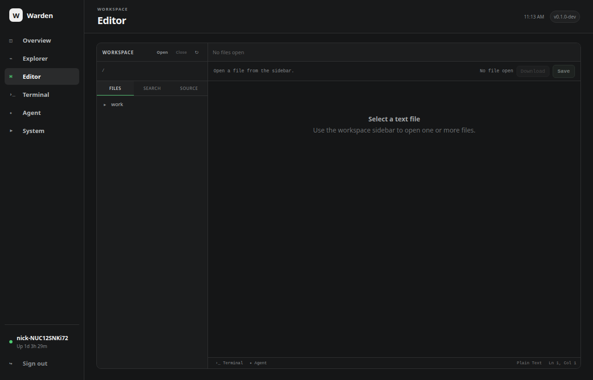

Documentation · Editor
Editor
A lightweight workspace editor built into Warden for real server-side project work without pretending to be a complete desktop IDE.

Workspaces and files
Open one directory as the active workspace. The file pane keeps its own browsed directory, supports nested folders and multiple open tabs, and can be resized horizontally. Closing a workspace clears the project scope and returns browsing to the server user's home directory.
The Editor intentionally supports one workspace today. A future multi-workspace model can build on the same boundary without making the current UI ambiguous.
Editing
- syntax-highlighted text with wrapping;
Ctrl+Ssaves the active file andCtrl+Shift+Ssaves every dirty tab;- occurrence highlighting follows the current word or selection;
Ctrl+Dadds the next occurrence and supports multi-occurrence typing/deletion;- multi-edit changes have explicit undo/redo support;
- writes use temporary-file + fsync + atomic rename while preserving existing permission bits.
Workspace search and replace
Search remains useful while simply browsing a folder. Replace All is intentionally available only after a workspace is explicitly opened, making the bulk-write boundary visible.
Replace All is recorded as one short-lived undo transaction. Ctrl+Z restores the affected files together, but Warden refuses the undo if a file was changed again after replacement. Changed files are surfaced as editor tabs, with a cap to avoid opening hundreds at once.
Operational limits
Search uses Go's bounded RE2 regular-expression engine, returns at most 500 matches, skips binary content and files larger than 2 MiB, and does not descend into nested .git directories. Replace All retains at most 32 MiB of original content for undo and keeps no more than eight short-lived undo transactions.
Integrated terminal
Ctrl+` toggles a resizable terminal panel beneath the editor. It is the same live PTY as the full Terminal view, so expanding or collapsing it does not create a new shell. Opening a workspace also moves the shell cwd to that workspace when it is safe to do so.
See Terminal for the authority and PTY details.
Live workspace tree
While Editor is visible, the workspace file tree refreshes every few seconds and preserves expanded directories, so external changes from the coding agent, terminal or other tools appear live. Open editor buffers are not silently reloaded, avoiding accidental loss of unsaved edits.
Integrated coding agent
Editor can open Warden Agent as a collapsible pane beside the file editor, similar to an IDE coding-assistant panel. The pane is horizontally resizable, remembers its width and collapsed state, uses the currently open workspace, and shares the same live Agent run, tool trace, Stop control and session-copy behavior as the dedicated Agent page.
Dark-mode scrolling
Warden styles scrollbars to match the dark interface while keeping a substantial grab area and minimum thumb size. Editor overlays that intentionally hide their own synchronized scrollbars remain hidden.